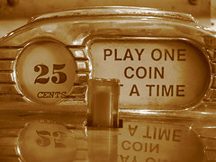

The Celestial Jukebox is here
Music sites like Last.fm and Pandora that offer you a customized radio based upon your listening tastes have been extremely popular over the last few years. These sites are like listening to a radio station where the DJ knows exactly what kind of music you like. These customized radio stations are great for general listening and as a way to discover new music. But just like traditional radio, if you in the mood for a particular song by a particular artist, you are out of luck - Internet radio providers have to follow a strict set of rules to make sure that listeners aren't too happy with their Internet listening. You can't play an artist or track on demand and the number of 'skips' are limited. If you really want to listen to Deep Purple's "Smoke on the Water" you are out of luck.
In 2008,
this is all going to change. We are now starting to see the next
generation of music apps hit the web that no longer are beholden to the
rules of Internet radio. These music apps allow you to play any
song you want, at anytime for free. Some notable next generation music
apps that offer play on demand are Finetune, Jango, The Hype Machine, Grooveshark, and seeqpod. Spotify (in private beta) is extremely nice. Over the next 6 months, we will see even more music apps released that let you listen to any song you want.
In the book 'The future of music',
authors Kusek and Leonhard write about a future where music 'flows like
water'. Where all songs are playable, on demand, anytime.
This is the Celestial Jukebox - the great jukebox in the sky that is
ready to play any song you want. 2008 will be the year of the
Celestial Jukebox - at least if you are sitting at your computer, You
will be able to listen to virtually any song that you want, on
demand. The only time you will need to pay for music is if you
want to listen to it on your iPod or your living room stereo. And
of course, in the not too distant future, all of our devices will
be connected to the net - when this happens, the Celestial Jukebox will
really exist. We will be able to listen to any song, at any time,
at any place, on any device.
Posted by celestial on January 16, 2008 at 01:19 PM EST #